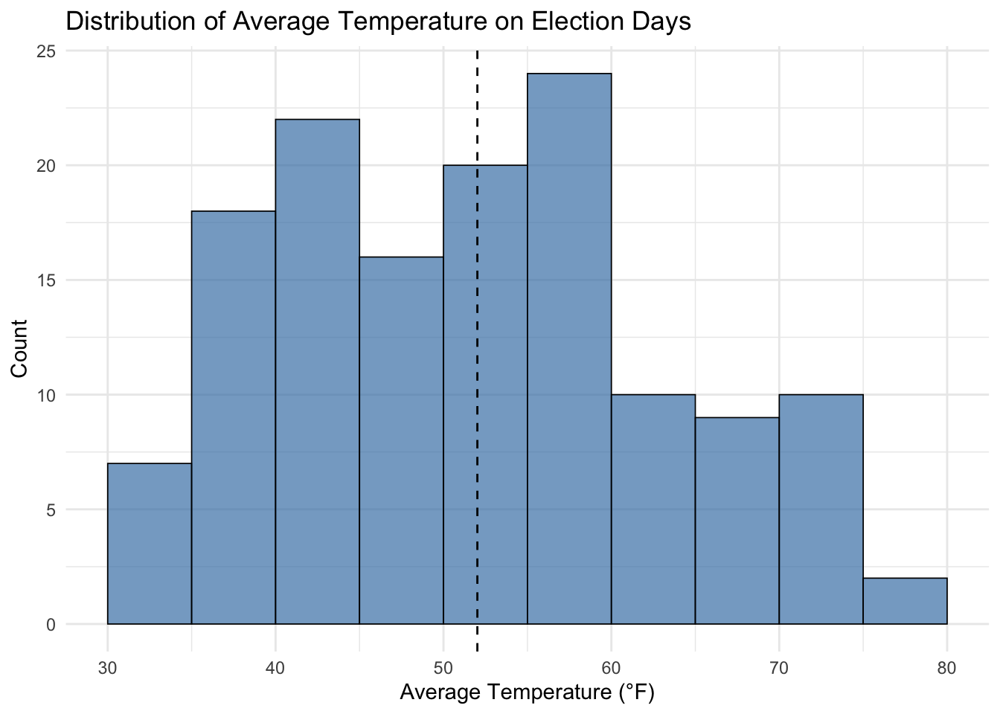
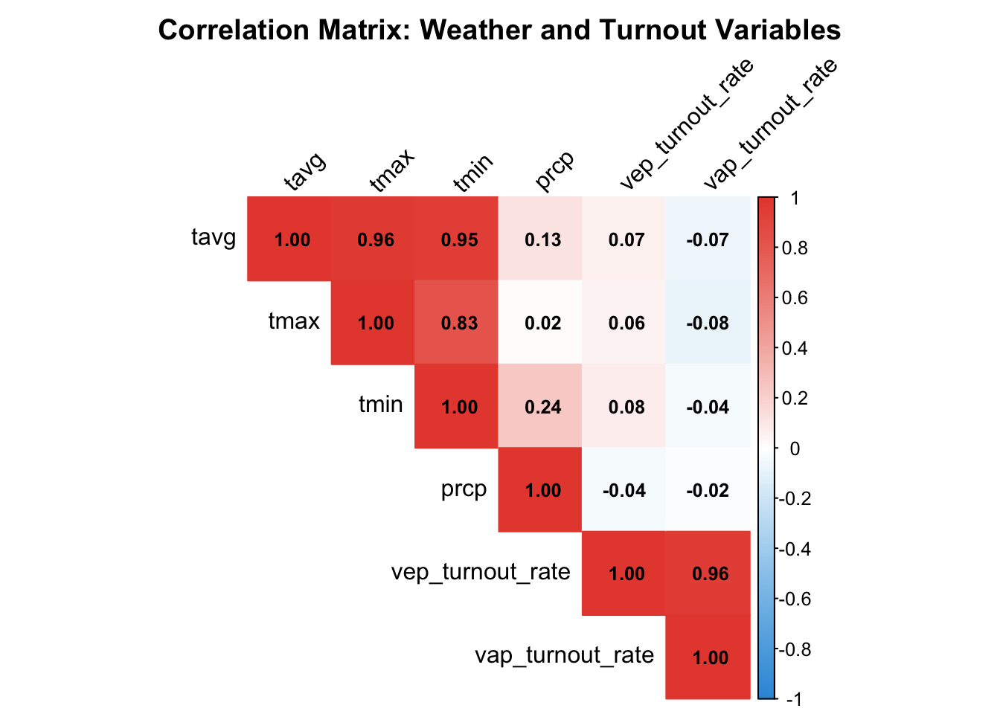
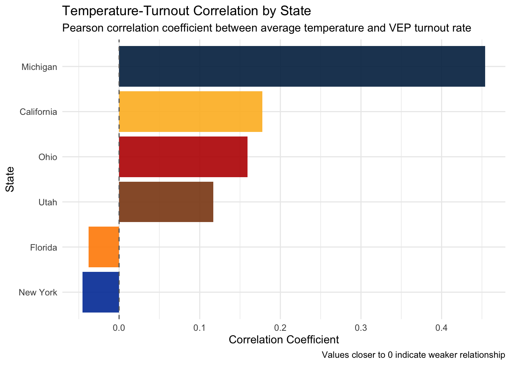
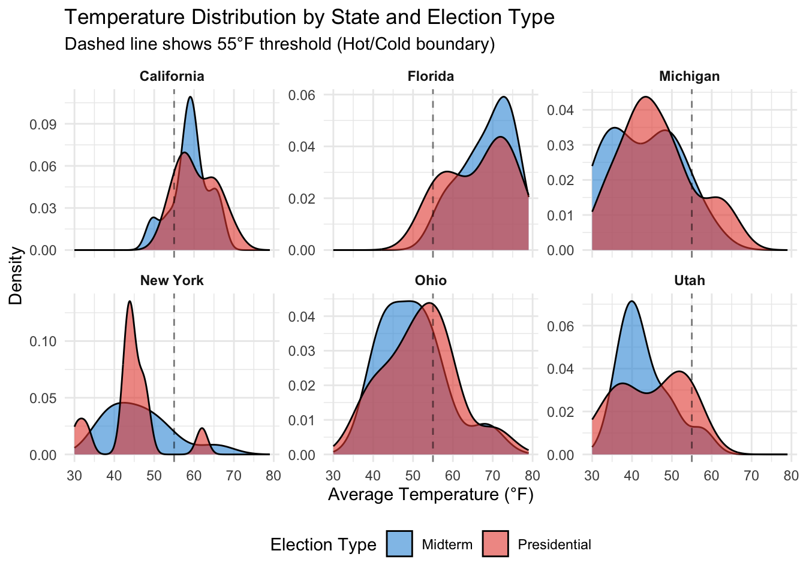

Code
library(tidyverse)
library(janitor)
library(ggplot2)
library(plotly)library(tidyverse)
library(janitor)
library(ggplot2)
library(plotly)state_colors <- c(
"California" = "#FDB927",
"Florida" = "#FF8C00",
"Michigan" = "#00274C",
"New York" = "#003DA5",
"Ohio" = "#BB0000",
"Utah" = "#8B4513"
)analysis_df <- read_csv("../data/processed-data/election_day_weather_full_cleaned.csv") %>%
clean_names() %>%
arrange(state, year)
head(analysis_df)# A tibble: 6 × 18
state state_abb year election_type election_date station_id station_name
<chr> <chr> <dbl> <chr> <date> <chr> <chr>
1 California CA 1980 Presidential 1980-11-04 USW000232… SACRAMENTO …
2 California CA 1982 Midterm 1982-11-02 USW000232… SACRAMENTO …
3 California CA 1984 Presidential 1984-11-06 USW000232… SACRAMENTO …
4 California CA 1986 Midterm 1986-11-04 USW000232… SACRAMENTO …
5 California CA 1988 Presidential 1988-11-08 USW000232… SACRAMENTO …
6 California CA 1990 Midterm 1990-11-06 USW000232… SACRAMENTO …
# ℹ 11 more variables: latitude <dbl>, longitude <dbl>, tmax <dbl>, tmin <dbl>,
# prcp <dbl>, snow <dbl>, tavg <dbl>, rain_any <dbl>, snow_any <dbl>,
# temp_category <chr>, day_type <chr>glimpse(analysis_df)Rows: 138
Columns: 18
$ state <chr> "California", "California", "California", "California", …
$ state_abb <chr> "CA", "CA", "CA", "CA", "CA", "CA", "CA", "CA", "CA", "C…
$ year <dbl> 1980, 1982, 1984, 1986, 1988, 1990, 1992, 1994, 1996, 19…
$ election_type <chr> "Presidential", "Midterm", "Presidential", "Midterm", "P…
$ election_date <date> 1980-11-04, 1982-11-02, 1984-11-06, 1986-11-04, 1988-11…
$ station_id <chr> "USW00023271", "USW00023271", "USW00023271", "USW0002327…
$ station_name <chr> "SACRAMENTO 5 ESE, CA US", "SACRAMENTO 5 ESE, CA US", "S…
$ latitude <dbl> 38.55520, 38.55520, 38.55520, 38.55520, 38.55520, 38.555…
$ longitude <dbl> -121.41830, -121.41830, -121.41830, -121.41830, -121.418…
$ tmax <dbl> 84, 72, 65, 80, 64, 68, 73, 64, 64, 69, 71, 74, 72, 78, …
$ tmin <dbl> 55, 47, 51, 50, 49, 50, 55, 43, 43, 51, 46, 41, 45, 55, …
$ prcp <dbl> 0.00, 0.00, 0.33, 0.00, 0.00, 0.00, 0.00, 0.00, 0.00, 0.…
$ snow <dbl> NA, NA, NA, NA, NA, NA, 0, 0, NA, 0, 0, 0, 0, NA, 0, 0, …
$ tavg <dbl> 69.5, 59.5, 58.0, 65.0, 56.5, 59.0, 64.0, 53.5, 53.5, 60…
$ rain_any <dbl> 0, 0, 1, 0, 0, 0, 0, 0, 0, 0, 0, 0, 0, 0, 0, 0, 0, 0, 0,…
$ snow_any <dbl> 0, 0, 0, 0, 0, 0, 0, 0, 0, 0, 0, 0, 0, 0, 0, 0, 0, 0, 0,…
$ temp_category <chr> "Hot", "Hot", "Hot", "Hot", "Hot", "Hot", "Hot", "Cold",…
$ day_type <chr> "Dry", "Dry", "Wet", "Dry", "Dry", "Dry", "Dry", "Dry", …summary(analysis_df) state state_abb year election_type
Length:138 Length:138 Min. :1980 Length:138
Class :character Class :character 1st Qu.:1990 Class :character
Mode :character Mode :character Median :2002 Mode :character
Mean :2002
3rd Qu.:2014
Max. :2024
election_date station_id station_name latitude
Min. :1980-11-04 Length:138 Length:138 Min. :30.39
1st Qu.:1990-11-06 Class :character Class :character 1st Qu.:38.56
Median :2002-11-05 Mode :character Mode :character Median :40.38
Mean :2002-11-05 Mean :39.21
3rd Qu.:2014-11-04 3rd Qu.:42.75
Max. :2024-11-05 Max. :42.78
longitude tmax tmin prcp
Min. :-121.42 Min. :38.00 Min. :21.00 Min. :0.00000
1st Qu.:-111.97 1st Qu.:50.25 1st Qu.:34.00 1st Qu.:0.00000
Median : -84.48 Median :61.00 Median :41.00 Median :0.00000
Mean : -93.17 Mean :61.68 Mean :42.36 Mean :0.09928
3rd Qu.: -82.88 3rd Qu.:72.00 3rd Qu.:49.00 3rd Qu.:0.07750
Max. : -73.80 Max. :89.00 Max. :70.00 Max. :1.65000
snow tavg rain_any snow_any
Min. :0.000000 Min. :30.00 Min. :0.0000 Min. :0.00000
1st Qu.:0.000000 1st Qu.:43.12 1st Qu.:0.0000 1st Qu.:0.00000
Median :0.000000 Median :51.25 Median :0.0000 Median :0.00000
Mean :0.007207 Mean :52.02 Mean :0.3478 Mean :0.01449
3rd Qu.:0.000000 3rd Qu.:59.50 3rd Qu.:1.0000 3rd Qu.:0.00000
Max. :0.700000 Max. :79.00 Max. :1.0000 Max. :1.00000
NA's :27
temp_category day_type
Length:138 Length:138
Class :character Class :character
Mode :character Mode :character
ggplot(analysis_df, aes(x = tavg)) +
geom_histogram(
binwidth = 5,
fill = "steelblue",
alpha = 0.7,
boundary = 0,
color = "black", # adds border around bars
size = 0.3 # thickness of border
) +
geom_vline(
aes(xintercept = mean(tavg, na.rm = TRUE)),
linetype = "dashed",
color = "black"
) +
labs(
title = "Distribution of Average Temperature on Election Days",
x = "Average Temperature (°F)",
y = "Count"
) +
theme_minimal()
Interpretation: The distribution of Election Day temperatures across all states and years shows that most elections occur in moderate fall weather, with temperatures centered around 55-60°F (indicated by the dashed line showing the mean). The distribution is relatively normal, suggesting that early November consistently provides mild to cool conditions across the United States. The spread shows variability from cold days in the 30s to warmer days in the 70s-80s, reflecting both geographic diversity and year-to-year weather variation.
p_temp_box <- ggplot(analysis_df, aes(x = state, y = tavg, fill = state)) +
geom_boxplot(alpha = 0.9) +
scale_fill_manual(values = state_colors) +
labs(
title = "Election Day Temperature by State",
x = "State",
y = "Average Temperature (°F)"
) +
theme_minimal() +
theme(
legend.position = "none",
axis.text.x = element_text(angle = 0, hjust = 0.5)
)
ggplotly(p_temp_box)Interpretation: This boxplot reveals clear geographic temperature patterns on Election Day. Florida consistently experiences the warmest conditions (median ~72°F), while northern states like Michigan and New York have cooler Election Days (medians in the mid-40s to low-50s). California shows moderate temperatures with relatively low variability. The presence of outliers and wide interquartile ranges in several states (notably Ohio and Florida) indicates significant year-to-year temperature variability, suggesting that early November weather can vary substantially depending on yearly climate patterns.
temp_on_elec_day <- ggplot(analysis_df, aes(x = year, y = tavg, color = state)) +
geom_line(linewidth = 0.8) +
geom_point(size = 1.5) +
scale_color_manual(values = state_colors) +
labs(
title = "Average Election Day Temperature Over Time by State",
subtitle = "Election Day average temperature (°F), by year and state",
x = "Election Year",
y = "Average Temperature (°F)",
color = "State"
) +
theme_minimal() +
theme(legend.position = "bottom")
ggplotly(temp_on_elec_day)Interpretation: The time series reveals that Election Day temperatures have been highly variable across years with no clear long-term warming or cooling trend for most states. Florida shows the most dramatic recent spike, reaching nearly 80°F in 2024 (the warmest recorded). Ohio displays the most erratic pattern with swings from near 40°F to 70°F, reflecting its susceptibility to early-season cold fronts versus warm spells. California shows a slight cooling trend over the decades. Notably, 2020 was unusually cold across multiple states, while 2024 was exceptionally warm. These patterns suggest that Election Day weather remains unpredictable and can vary by 20-30°F between election cycles.
## Temperature and Turnout Trends Over Time
# Load voter turnout data and merge with weather data
voter_turnout <- read_csv("../data/processed-data/voter_turnout_selected_states.csv") %>%
janitor::clean_names()
# Merge weather + turnout by state and year
weather_turnout <- analysis_df %>%
inner_join(
voter_turnout,
by = c("state", "year")
)
# Create faceted plot by state to show both metrics
p_faceted <- ggplot(weather_turnout, aes(x = year)) +
geom_line(aes(y = tavg / 100, color = "Temperature"), linewidth = 0.8) +
geom_point(aes(y = tavg / 100, color = "Temperature"), size = 1.5) +
geom_line(aes(y = vep_turnout_rate, color = "Turnout"), linewidth = 0.8) +
geom_point(aes(y = vep_turnout_rate, color = "Turnout"), size = 1.5) +
facet_wrap(~state, ncol = 2) +
scale_color_manual(
values = c("Temperature" = "#E74C3C", "Turnout" = "#3498DB"),
name = "Metric"
) +
scale_y_continuous(
name = "Turnout Rate",
labels = scales::percent_format(),
sec.axis = sec_axis(~.*100, name = "Temperature (°F)")
) +
labs(
title = "Temperature and Voter Turnout Trends Over Time by State",
subtitle = "Red = Temperature (°F) on right axis | Blue = Turnout Rate on left axis",
x = "Election Year"
) +
theme_minimal() +
theme(
legend.position = "bottom",
strip.text = element_text(face = "bold", size = 11),
axis.title.y.left = element_text(color = "#3498DB"),
axis.title.y.right = element_text(color = "#E74C3C"),
axis.text.y.right = element_text(color = "#E74C3C")
)
# Display the plot (keeping as static to preserve dual axes)
p_faceted
Interpretation: Comparing temperature and turnout trends reveals complex state-specific patterns. Most notably, there is no consistent relationship between Election Day temperature and voter turnout across states. For instance:
This suggests that Election Day weather may be less influential on turnout than political factors like election type, candidate quality, and mobilization efforts. The dual-axis visualization reveals that temperature variation (20-30°F swings) occurs alongside both high and low turnout years, indicating weather is not a primary determinant of voter participation in these states.
## Correlation Analysis
# Calculate correlations between weather variables and turnout
library(corrplot)
# Select numeric variables for correlation
correlation_data <- weather_turnout %>%
select(tavg, tmax, tmin, prcp, vep_turnout_rate, vap_turnout_rate) %>%
na.omit()
# Compute correlation matrix
cor_matrix <- cor(correlation_data)
# Display correlation matrix
print("Correlation Matrix:")[1] "Correlation Matrix:"round(cor_matrix, 3) tavg tmax tmin prcp vep_turnout_rate vap_turnout_rate
tavg 1.000 0.964 0.949 0.127 0.070 -0.066
tmax 0.964 1.000 0.829 0.019 0.058 -0.085
tmin 0.949 0.829 1.000 0.244 0.077 -0.037
prcp 0.127 0.019 0.244 1.000 -0.038 -0.019
vep_turnout_rate 0.070 0.058 0.077 -0.038 1.000 0.956
vap_turnout_rate -0.066 -0.085 -0.037 -0.019 0.956 1.000# Create correlation heatmap
corrplot(cor_matrix,
method = "color",
type = "upper",
addCoef.col = "black",
tl.col = "black",
tl.srt = 45,
number.cex = 0.8,
col = colorRampPalette(c("#3498DB", "white", "#E74C3C"))(200),
title = "Correlation Matrix: Weather and Turnout Variables",
mar = c(0,0,2,0))
Interpretation: The correlation matrix reveals the relationships between weather variables and voter turnout:
## State-Specific Correlations
# Calculate correlation by state
state_correlations <- weather_turnout %>%
group_by(state) %>%
summarize(
temp_turnout_cor = cor(tavg, vep_turnout_rate, use = "complete.obs"),
prcp_turnout_cor = cor(prcp, vep_turnout_rate, use = "complete.obs"),
n_elections = n()
) %>%
arrange(desc(abs(temp_turnout_cor)))
print("Temperature-Turnout Correlations by State:")[1] "Temperature-Turnout Correlations by State:"state_correlations# A tibble: 6 × 4
state temp_turnout_cor prcp_turnout_cor n_elections
<chr> <dbl> <dbl> <int>
1 Michigan 0.454 0.220 23
2 California 0.178 -0.129 23
3 Ohio 0.159 -0.0654 23
4 Utah 0.117 -0.0492 23
5 New York -0.0454 0.0177 23
6 Florida -0.0376 -0.120 23# Visualize state-specific correlations
ggplot(state_correlations, aes(x = reorder(state, temp_turnout_cor),
y = temp_turnout_cor,
fill = state)) +
geom_col(alpha = 0.9) +
geom_hline(yintercept = 0, linetype = "dashed", color = "gray40") +
scale_fill_manual(values = state_colors) +
coord_flip() +
labs(
title = "Temperature-Turnout Correlation by State",
subtitle = "Pearson correlation coefficient between average temperature and VEP turnout rate",
x = "State",
y = "Correlation Coefficient",
caption = "Values closer to 0 indicate weaker relationship"
) +
theme_minimal() +
theme(legend.position = "none")
Interpretation: State-specific analysis shows:
## Statistical Significance Tests
# Test correlations for statistical significance
library(broom)
correlation_tests <- weather_turnout %>%
group_by(state) %>%
summarize(
correlation = cor(tavg, vep_turnout_rate, use = "complete.obs"),
p_value = cor.test(tavg, vep_turnout_rate)$p.value,
n = n(),
significant = ifelse(p_value < 0.05, "Yes", "No")
) %>%
arrange(p_value)
print("Statistical Significance of Temperature-Turnout Correlations:")[1] "Statistical Significance of Temperature-Turnout Correlations:"correlation_tests# A tibble: 6 × 5
state correlation p_value n significant
<chr> <dbl> <dbl> <int> <chr>
1 Michigan 0.454 0.0295 23 Yes
2 California 0.178 0.417 23 No
3 Ohio 0.159 0.468 23 No
4 Utah 0.117 0.595 23 No
5 New York -0.0454 0.837 23 No
6 Florida -0.0376 0.865 23 No # Overall correlation test (all states combined)
overall_cor_test <- cor.test(weather_turnout$tavg,
weather_turnout$vep_turnout_rate)
cat("\nOverall Correlation Test (All States Combined):\n")
Overall Correlation Test (All States Combined):cat(sprintf("Correlation: %.3f\n", overall_cor_test$estimate))Correlation: 0.070cat(sprintf("P-value: %.4f\n", overall_cor_test$p.value))P-value: 0.4167cat(sprintf("95%% CI: [%.3f, %.3f]\n",
overall_cor_test$conf.int[1],
overall_cor_test$conf.int[2]))95% CI: [-0.099, 0.234]Interpretation: Statistical significance testing reveals:
# Create faceted density plots
ggplot(analysis_df, aes(x = tavg, fill = election_type)) +
geom_density(alpha = 0.6) +
facet_wrap(~state, ncol = 3, scales = "free_y") +
scale_fill_manual(values = c("Presidential" = "#E74C3C", "Midterm" = "#3498DB")) +
geom_vline(xintercept = 55, linetype = "dashed", color = "black", alpha = 0.5) +
labs(
title = "Temperature Distribution by State and Election Type",
subtitle = "Dashed line shows 55°F threshold (Hot/Cold boundary)",
x = "Average Temperature (°F)",
y = "Density",
fill = "Election Type"
) +
theme_minimal() +
theme(legend.position = "bottom",
strip.text = element_text(face = "bold"))
Interpretation: This reveals whether presidential and midterm elections experience different weather patterns within each state. The dashed line at 55°F shows the threshold between hot and cold categories.